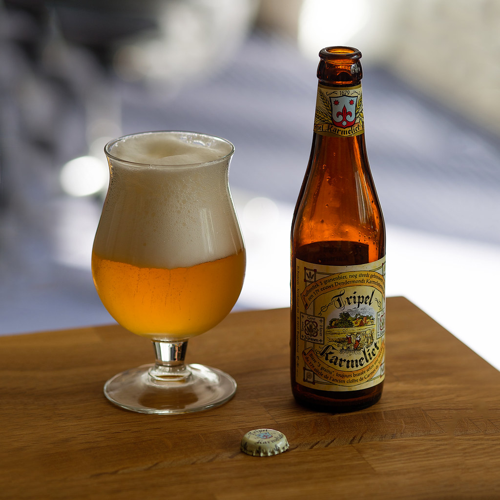

Karmeliet triple
La bière Triple Karmeliet est l'un des grands classiques des bières belges. Selon la brasserie Bosteels, la recette utilisée est la même depuis 1679. A l'époque, la Karmeliet était alors produite au sein de l'abbaye carmélite de Dendermonde. Bière de fermentation haute et refermentée en bouteille, elle présentait déjà à l'époque la particularité d'être produite à partir de trois céréales : l'orge, le froment et l'avoine. C'est d'ailleurs de ces ingrédients qu'elle tire son nom. A la dégustation, cette bière belge présente une robe blonde dorée et une mousse crémeuse. Le nez s'avère à la fois raffiné et complexe. On retrouve ainsi les notes d'épices et de banane propres à la levure utilisée mêlées aux arômes agrumes du houblon Styrians. En bouche, ce sont les différentes céréales qui s'expriment en premier, associées ensuite aux touches houblonnées du Styrian. La texture, à la fois sèche et crémeuse rend la Triple Karmeliet délicieusement équilibrée. Elle possède un degrès de 8.